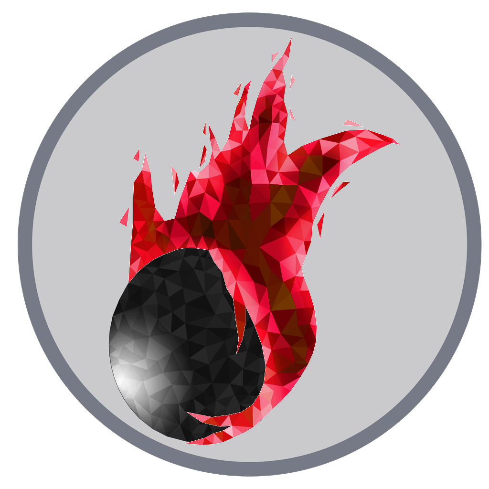

OnyxBay 
- Наш сайт
https://ss13.ru
- Наш дискорд сервер
https://discord.gg/ZPw3t45
- 15 November 2019
- Igorsaux updated:
- Добавлен блоб.
- Добавлено гниение органов при смерти мозга.
- Небольшой ребаланс блоба.
- Удалено давнее подскальзывание на волосах.
- Лишний раз обновлён tgui2.
- Небольшое улучшение интерфейса.
- Фикс разброса упавших на пол гильз.
- TatarTheBuilder updated:
- Добавлен РПГ.
- 14 November 2019
- Ifromspace updated:
- Добавлен рестрикт по возрасту для глав.
- 13 November 2019
- Igorsaux updated:
- Ещё оптимизация гунчата.
- Впилена возможность отключить гунчат.
- Добавлена возможность установки своего шрифта для чата.
- Установлена кнопка донат-панели.
- 12 November 2019
- EditorRUS updated:
- Починена донат-панель.
- Igorsaux updated:
- Фиксы донат-панели и иконок в ней.
- Добавлена возможность изменить расположение строки чата.
- Добавлена возможность изменить размер иконок в чате.
- Оптимизация гунчата.
- Фикс цветов каналов и OOC в тёмной теме.
- Фикс экзамайна пожарных штворок.
- 11 November 2019
- Igorsaux updated:
- Произошел гунчат... опять.
- Добавлен полноэкранный режим и хоткеи для него.
- Минорный фикс тултипа.
- Фикс нейролейса.
- Фикс размера иконок в чате.
- Фикс звука карманов у одежды.
- TatarTheBuilder updated:
- У визардов удалено кольцо невидимости.
- Добавлен кастомный шлем и противогаз.
- 10 November 2019
- Igorsaux updated:
- Небольшие фиксы звуков стрельбы и взрывов.
- Фикс боди сканнера.
- Минорные улучшения интерфейса боди сканнера.
- Добавлен опциональный тултип.
- Добавлена проверка целостности кэша.
- Убран звук пулла при движении шагом.
- Добавлена загрузка всех ресурсов при подключении.
- TatarTheBuilder updated:
- Усилен импульсный карабин.
- 09 November 2019
- Igorsaux updated:
- Обновление tgui2 с новыми фичами.
- Добавлен новый интерфейс для боди сканнера.
- Добавлена кнопка паузы музыки в жукбоксе.
- Фикс звука двойной двери.
- Фикс звука пулла.
- 08 November 2019
- Igorsaux updated:
- Возвращён старый звук стеклянных аирлоков.
- Фикс звука анонсов.
- Добавлены отдельные эмбиенты технических тоннелей, научного и медицинского отсека.
- Удалён лишний эмбиент.
- 07 November 2019
- TatarTheBuilder updated:
- [Exodus]: Возвращена старая карта.
- Новый спрайт для сканера антител.
- 05 November 2019
- Igorsaux updated:
- Фикс громкости звука дыхания через баллоны.
- Возвращены старые звуки ударов.
- 04 November 2019
- Igorsaux updated:
- Фикс спрайта искр.
- Фикс звука таскания мешков.
- Фикс спама эмоутами.
- Фикс звука дыхания через баллоны.
- 03 November 2019
- Igorsaux updated:
- Добавлено множество новых эмбиентов и звуков для предметов, консолей, дверей и прочего.
- 02 November 2019
- Rampo updated:
- [Eclipse]: Фикс арсенала.
- 01 November 2019
- Rampo updated:
- [Eclipse]: Возвращена старая карта.
- 31 October 2019
- Rampo updated:
- [Eclipse]: Крупный редизайн станции под хеллоуин, начиная от банального декора и заканчивая завозом в оружейную экипировки культа.
- [Eclipse]: Разнообразные мапфиксы.
- TatarTheBuilder updated:
- [Exodus]: Хеллоуиниское преобразование карты с соответствующим декором и тыквами.
- kreeperHLC updated:
- Фикс поднятия Чужими оружия.
- Изменены и пофикшены спрайты чужих.
- Чужим добавлено зрение в темноте.
- 30 October 2019
- TatarTheBuilder updated:
- [Exodus]: Добавлен кейс с психоскопом к РД.
- [Exodus]: Фикс научного шаттла и остальные минорные фиксы карты.
- 29 October 2019
- Igorsaux updated:
- Пофикшен абуз привязывания к стульям во время контузии.
- KreeperHLC updated:
- Починен и возвращён режим Чужих.
- 28 October 2019
- Ifromspace updated:
- Убран телепорт наемников.
- Igorsaux updated:
- Убран обжектив на кражу нейромода.
- Фикс сообщений от психоскопа.
- 27 October 2019
- Igorsaux updated:
- Минорные фиксы психоскопа. Был вернут восьмой IE для tgui.
- 25 October 2019
- Igorsaux updated:
- Починил tgui2 интерфейс.
- Починил интерфейс ресливера.
- Дополнительные фиксы психоскопа.
- Добавил цели для трейторов на кражу психоскопа/нейромода.
- Запилил новый кейс с психоскопом.
- Добавил стрелки для переключения волос на голове и лице в сетапе.
- Rampo updated:
- [Eclipse]: Добавил кейс с психоскопом к РД.
- [Eclipse]: Добавил шаттл инженерам, новый проход к камерам в бриге, улучшение приемки, дворика.
- [Eclipse]: Фикс некоторых доступов в техтоннели, электрификация щитов в тестах рнд, другие декоративные мелочи.
- [Eclipse]: Пофиксил барную вывеску.
- 23 October 2019
- Igorsaux updated:
- Пофикшен и улучшен скрипт генерации чейнджлога.
- Добавлены психоскоп и нейромоды.
- Rampo updated:
- Убрал капитанские и прочие коммандные картриджи из PTech вендора.
- [Eclipse]: Расширена библиотека.
- [Eclipse]: Перенес музей цк с коробки.
- [Eclipse]: Удлинил и отзеркалил шаттл эвакуации.
- [Eclipse]: Расширил станционные доки, добавил комнату содержания заключенных перед отлетом.
- [Eclipse]: Немного оптимизировал вооружение в арсенале.
- [Eclipse]: Исправил доступ в техах возле вирусологии, добавил туда немного шкафчиков по запросу.
- [Eclipse]: Добавил чарджеры в дормы для зарядки техники.
- [Eclipse]: Починил трубы над робототехникой и помещении для помп в инженерке.
- [Eclipse]: В целях эксперимента частично разобрал сингу, теперь к ее запуску можно подойти творчески и использовать собственную конфигурацию.
- [Eclipse]: Вирусологу добавил перчатки, больше самплов и света в отсек.
- [Eclipse]: В атмосферке сделал вывод в космос для ненужных газов.
- [Eclipse]: Переделал дворик.
- [Eclipse]: Прочий мелкий декор.
- Support updated:
- Много-много разных багфиксов, которые никто не расписал (ищу писателя чейнджлогов).
- 22 October 2019
- Igorsaux updated:
- Добавлен рандомный способ выбора карты после конца раунда.
- 21 October 2019
- MrPersival updated:
- Пофикшен UI микроволновки.
- 20 October 2019
- Igorsaux updated:
- Фикс рецепта модульного компьютера.
- 19 October 2019
- TatarTheBuilder updated:
- Добавлено два новых дереликта.
- Фикс астероида.
- 17 October 2019
- Igorsaux updated:
- Пофикшен кэш, теперь наноуи загружается так быстро - насколько это возможно.
- Пофикшены слои у шкафчиков.
- 15 October 2019
- Igorsaux updated:
- Фикс объявления законов.
- Убран абуз спеллов.
- 14 October 2019
- Fritcher36 updated:
- Добавлены пчёлы.
- Igorsaux updated:
- Фикс размножения денег.
- Фикс с пулом инвалидной коляски.
- Фикс проверки дистанции при открытии окна интегралки.
- Запрещена сборка лимиток в рюкзаке.
- Фикс оверлея камер.
- Фикс проблемы с телепортацией и дублировании в крио/слипере/бодисканере.
- 13 October 2019
- Igorsaux updated:
- Пофикшен режим отвёртки у мультитула.
- Пофикшено использование тряпки через противогаз/шлем.
- 12 October 2019
- LostHonk updated:
- Персонажиголодают быстрее.
- Ограничение доступов к криоподам.
- 11 October 2019
- Igorsaux updated:
- Очки и зум не работают через камеры.
- Добавлен проебавшийся спрайт линолеума.
- Теперь все предметы при подборе имеют плавную анимацию перемещения.
- 10 October 2019
- Igorsaux updated:
- Добавлен tgui2.
- Пофикшены авто воуты.
- 09 October 2019
- ifromspaceGANG updated:
- Добавлены дефекты речи.
- 08 October 2019
- TatarTheBuilder updated:
- Фикс шаттлов и конвееров.
- 06 October 2019
- Igorsaux updated:
- Добавлен оверлей для камер.
- 05 October 2019
- Igorsaux updated:
- Фикс скрабберов.
- 04 October 2019
- Rampo updated:
- Слегка нерфанул имбомачете.
- [Eclipse]: Добавлены хим- и кондимастеры в ксеноботанику, плюс комплект инструментов для работы второго человека.
- [Eclipse]: Оптимизация пространства в медбее, все для удобства хирургов.
- [Eclipse]: Добавил кнопки блокировки дверей в химию и хирургии, для внутреннего регулирования трафика самими игроками.
- [Eclipse]: Раскидал синих шкафов по отсекам и основным коридорам на случай разгерм внутри станции.
- [Eclipse]: Накидал немного больше декоративного оборудования в техтоннели, коридоры и добавил мезонки во дворик перед сингой.
- ZerlGray updated:
- Починен и обавлен режим хейст
- 03 October 2019
- Rampo updated:
- [Eclipse]: Была немного расширена ксенофлора, для грядок.
- [Eclipse]: В вирусологию добавил комнату для обезьян.
- [Eclipse]: Заменены местами джукбокс и сигаретная машина в баре, а также перемещена точка спавна призраков на шаттла прибытия.
- [Eclipse]: Добавлен второй биопринтер в коморку хирургов.
- 02 October 2019
- Ifromspace updated:
- Обновление внутриигрового события "Вспышка вируса".
- Добавлено несколько новых разновидностей вирусов разной степени тяжести.
- Igorsaux updated:
- Фикс бага с "облачками" сообщений над головами персонажей.
- Кириллица в интерфейсе наноуи, теперь нормально отображается.
- Пофикшен вынос предметов с голодека.
- Добавил тени предметам и объектам в игре.
- Переработка системы слоев внутри билда.
- Пофикшены сенсоры аир алярма.
- MrPersival updated:
- В автолате теперь можно распечатать мачете с приличными характеристиками, но и за соответствующую цену.
- Rampo updated:
- Переработка административных хоткеев, немного больше удобства нашим бедным педаликам.
- [Eclipse]: Обновление доступов в различные отсеки, теперь они еще более логичные, сокращение лишних доступов некоторым профессиям.
- [Eclipse]: Фикс сетей камер большинства отсеков, плюс возобновление доступа к камерам тестового полигона.
- [Eclipse]: Починка отвалившихся труб в медицинском отсеке, а также ремонт криоподов, теперь они морозят как никогда ранее.
- [Eclipse]: Модернизация отсека сгорания в токсинах научного отсека, выдерживает больше давления и температуры.
- [Eclipse]: Перенос заброшенных строений на астероиде с коробки.
- [Eclipse]: Переделка комнат голодека на правую сторону.
- [Eclipse]: Бригоправки: ребаланс вооружения арсенала, деангаризация лобби брига, прорублено окно к камерам заключенных.
- [Eclipse]: Фикс помп и скрабберов в библиотеке.
- [Eclipse]: И другие мелкоправки о которых автор уже позабыл.
- Tatarin updated:
- [Exodus]: Добавление сингулярного двигателя в инженерный отсек.
- Wolfish updated:
- Фиксы курток и водолазок в лоадауте.
- Добавил новые прически в панели настройки персонажей.
- 24 September 2019
- Rampo updated:
- [Eclipse]: Обновлен дормиторий, добавлена качалка с коробки и пару новых комнат.
- [Eclipse]: И другие мелкофиксы.
- 23 September 2019
- Rampo updated:
- [Eclipse]: Были почищены мелкие баги вроде выключателя света на кухне.
- [Eclipse]: Расширен космопорт, добавлены доки для новых шаттлов.
- [Eclipse]: Введены или починены собственно сами новые шаттлы, о них дальше.
- [Eclipse]: Починен шаттл спецопераций, базируется на ЦК.
- [Eclipse]: Починен легкий транспортный шаттл, базируется на ЦК с выходом в общие отсеки.
- [Eclipse]: Добавлен долгожданный шаттл торговца, стыковка рядом с вакантным офисом.
- [Eclipse]: Добавлен административный шаттл, для использования во время ивентов.
- [Eclipse]: Добавлен шаттл ЕРТ, имеет собственную базу.
- [Eclipse]: Разблокирован шаттл бомжей/воксов/пиратов, ожидается прирост грабительских вылазок в сторону станции.
- 18 September 2019
- Rampo updated:
- [Eclipse]: Было внесено пару небольших правок в медбее.
- [Eclipse]: Расширен отсек гидропоники, добавлено новое оборудование и небольшое пастбище.
- [Eclipse]: Добавлены шторы в офис для квартирмейстера.
- [Eclipse]: Добавлены таргеты для посылок в РнД и офис РД.
- [Eclipse]: Пофикшена дверь в ядре ИИ, которая имела проблемы с доступами.
- [Eclipse]: Бармену возвращен его шейкер, который украли котокрысы.
- [Eclipse]: И другие правки о которых автор уже успел забыть.
- 14 September 2019
- Rampo updated:
- [Eclipse]: Сменено направление указателей эвакуации, с северной части (к подам), на южную часть (к старпорту).
- [Eclipse]: Добавлено больше каталок в медотсек.
- [Eclipse]: Добавлены различные имланты в арсенал.
- [Eclipse]: Перенесены некоторое оружие с арсенала коробки.
- [Eclipse]: Добавлен хольстер и умывальник в детективскую.
- [Eclipse]: Пофикшена проблема с обесточиванием шахтерки.
- 13 September 2019
- Rampo updated:
- [Eclipse]: Различные мелкие правки которые можно было реализовать в течении раунда по просьбам игроков.
- [Eclipse]: Правки двигателя на суперматерии, теперь он работает нормально и стабильно.
- [Eclipse]: Добавление различных новых кнопок в кабинет СЕ для более гибкого управления.
- [Eclipse]: Бандольеры для дробовиков в оружейку.
- [Eclipse]: Модификация инженерной комнаты мониторинга двигателей, добавление консоли суперматерии.
- [Eclipse]: Фиксы труб, добавление канистр с водородом, правка водородной камеры в атмосферном отсеке.
- 10 September 2019
- Vmihey updated:
- Некоторые интегральные платы использовали материалы, которых у нас нет
- Мелкие фиксы для гостов
- Исправлен выбор дополнительных языков
- Киберконечности теперь имеют кибериконки. Кибервосхитительно, но может повлечь иные проблемы
- Voldirs updated:
- Обновлены ассортименты у торговцев
- Абсолютно все торговцы теперь ротируются
- Пофикшен воксо-торговец
- Добавлен торговец скафандрами (софтсьюты, войдсьюты, риги, модули к ним, баллоны)
- Добавлен торговец бронёй (бронежилеты, плэйткэрриеры, прибамбасы к ним и шлемы)
- Убраны некоторые торговцы, их ассортимент перенесён к другим
- Пофикшены пути некоторых спрайтов
- Измененен аванпост торговца: добавлены модульная консоль, речарджер, банкомат
- Вендоры торговца более не требуют доступа
- 01 September 2019
- Ifromspace updated:
- Сингулярность теперь умеет путешествовать между z-уровнями
- Bag of holding получил свои фичи назад
- Приклеенную на скотч бумагу теперь можно откреплять обратно
- Удалена возможность ИИ открывать дистанционно канистры с газом
- KreeperHLC updated:
- Обновлены интегральные платы
- Мелкие фиксы
- Tatarin updated:
- Обновлена карта шахт на астероиде
- В шахтерский вендор добавлен улучшенный скафандр
- Изменен внешний вид шахтерского челнока
- Немного изменен шахтерский аванпост, переделан жилой отсек
- Добавлены две новые локации на шахтерку, и еще один новый скафандр на одну из них
- Наконец замапленны поручни
- 25 August 2019
- ARZUMATA updated:
- Мим теперь умеет создавать невидимые стены
- FMajesty, LegatePritcher, kreeperHLC updated:
- Добавлены события начала раунда
- Vmihey updated:
- Шаттл теперь вызывает авторестарт вновь
- Введены дебаг иконки для починки невидимости лозы
- 20 August 2019
- HONKERTRON updated:
- Убрано размытие при увеличении спрайтов
- Vmihey updated:
- Твики и фиксы игрового ядра
- 16 August 2019
- Rampo updated:
- [Eclipse]: Добавил новый отсек - с материей.
- [Eclipse]: Пофиксил гравитационную аномалию у мостика.
- [Eclipse]: Улучшил техтоннель у библиотеки, добавлена конструкторская комната.
- [Eclipse]: Другие мелкофиксы, проводка, трубы и прочее.
- 14 August 2019
- Vmihey updated:
- Втрое меньше обезьян из манкикуба
- Падение в дыру на нижний Z-уровень на другого человека теперь не гибает обоих.
- Консоль поврежденного двигателя теперь можно починить.
- ...has a the bullet shrapnel, the bullet shrapnel, the bullet shrapnel
- Спрайты ФБП не обновлялись при полном восстановлении.
- Если в имени файла программы для компьютера указать знак # то с файлом невозможно взаимодействовать.
- Модульные консоли не удалялись
- Хамелеон проектор позволял телепортироваться через стены при должной сноровке.
- Дефибриллятор не саботировался емагом, а просто ломался.
- Инкубатор вирусов мог быть заполнен так, чтобы он содержал "бесконечную" еду для вирусов.
- ООС баны теперь работают.
- 13 August 2019
- TobyThorne updated:
- Добавлены офисные стулья, кресла, и кровати
- Добавлены складные стулья (mousedrop на себя, чтобы сложить их)
- Добавлены удобные кресла
- Подправлены рецепты крафта
- 12 August 2019
- Rampo updated:
- [Eclipse]: Фиксы бластов в отсеке с сингулярностью, теперь они не открываются от эми.
- [Eclipse]: Фиксы камер наблюдения за сингулярностью, теперь за ними можно наблюдать по каналу Engine.
- [Eclipse]: Возвращение смотровой площадки за сингулярностью, теперь с защитой от радиации.
- [Eclipse]: Изменения отсека с двигателем сингулярности, теперь он не такой ангарный.
- [Eclipse]: Добавление нитрогена в атмосферный отсек.
- [Eclipse]: Изменение кухни, добавление туда новых устройств.
- [Eclipse]: Улучшение техтоннелей.
- [Eclipse]: Временные фиксы электроснабжения, в частности увеличение запасов энергии со старта раунда, на время обучения новых игроков нюансам настройки сингулярного двигателя.
- [Eclipse]: Добавление публичной зарядки для синтов в коридоре по пути во дворик.
- [Eclipse]: Прочие мелкофиксы карты.
- Tatarin updated:
- В бриге произошли тактические перераспределения снаряжения.
- Пистолеты 45го по дефолту заряжены резиной, и в свободном доступе у офицерни есть только она.
- Ящик с летальным боезапасом теперь требует доступа смотрителя.
- Место тактического набора занял СБшный РИГ.
- Добавил еще больше фонариков.
- Пофиксил АПЦ в техах у брига.
- Пофиксил доступ на кнопках в дормиториях.
- Добавил новый пистолет детективу в кейс. Аналог 45го, но под 9мм. Менее нуарный, чем текущие пушки.
- Вернул в детективскую плащ криминалиста.
- TobyThorne updated:
- Активный блок помимо замедления передвижения уменьшает регенерацию устойчивости на 40%
- Активный блок не сбивается при блокировании удара, но отключается бросками и выстрелами (при успешном блокировании/отражении).
- В активном блоке нельзя атаковать.
- Кулдаун переключения блока уменьшен с 0.5 секунд до 0.3.
- Убран порог устойчивости для дизарма. Шанс дизарма остаётся примерно прежним.
- Значительно увеличен шанс уронить цель при дизарме - порог устойчивости увеличен с 15 до 20.
- Пули теперь наносят урон по устойчивости цели, за счёт чего бинбэги и резиновые пули становятся действительно актуальными. Но они и близко не стоят с выстрелами ПТРа.
- Выстрелы в упор по лежачим целям наносят ещё в 2.5 раза больше урона. Добивай жертв красиво.
- Кнопка succumb теперь доступна гораздо раньше
- UNREAL SORD
- Vmihey updated:
- Твики и фиксы игрового ядра
- 02 August 2019
- Vmihey, TobyThorne, Tatarin updated:
- Жукбокс теперь снова играет, а не просто отнимает у вас деньги
- Теперь на радкостюм и инженерный жилет можно нацепить счетчик гейгера
- Минорные фиксы медицинской повязки и прочего
- 28 July 2019
- Plin updated:
- Удалён дух нового года из жукбокса. Пора бы.
- Tatarin updated:
- 45е заменены на кастомные пистолеты, с новыми спрайтами и звуками.
- Коробки с осколочными унесли из оружейной. Слишком смертоносно.
- Добавлены тактикульные джампсьюты.
- Заменены оверпаверд СВАТбутсы в оружейной на тактикал джекбутсы.
- В ящичек с офицерским шмотьем добавлены балаклавы.
- Слегка украшен зал суда.
- Заменены комбат белты в оружейной на комбат весты.
- Пофикшены мертвые зоны камер в детективской, бриге и на стрельбище.
- Убрана уязвимая зона в геттобриге.
- Пофикшен доступ на дверях в геттобриге.
- Добавлены перчатки криминалиста в офис детектива.
- Заменена бесполезная дубинка детектива на перцовку. Деревянные дубинки всё еще есть в геттобриге.
- Провода к солнечным панелям теперь проведены по дефолту.
- Внимание! В активной зоне реактора теперь нет воздуха. Не отлично, но и не ужасно.
- Добавлен автолат, устройство для покраски кабелей, нормальные фонарики и система охлаждения для синтов.
- Минорные изменения: прожектор, доски, ноутбук, штуку для замены ламп, рулетку и тому подобное.
- Перепилен заброшенный аванпост на шахтерке.
- У нюки наконец появились шлема к войдсьютам и магбутсы.
- ЕРТшникам добавлены боевые дефибрилляторы.
- Пофикшены шаттерсы на шаттле ЕРТ.
- Добавлены на шахтерский аванпост: бочка с пивом, консоль мониторинга датчиков со стазис-мешком в медпункт.
- Такая же консоль добавлена и в медпункт научного аванпоста. Как и стазис-мешок.
- Пофикшен черный галстук. Теперь он черный!
- Курткам детектива добавлена возможность застегнуть их.
- Добавлен в шкаф детектива новый бронежилет, как альтернатива страшному зеленому нечто.
- Переработана восточная часть дорм. Качалка, фитнес-вендор, отдельные спальни, бассейн теперь не лужа.
- Новые звуки для большинства пистолетов и некоторых ПП.
- Пофикшена смешная мусорка в карго.
- В РнД добавлен принтер интегральных схем, с инструментами.
- Рандомлут на синдишаттле в гетто. Теперь есть хоть какой-то смысл туда залезать.
- Спрятал несколько вещей в техах. Развлекайтесь!
- Добавил бейдж-удостоверение журналиста для, собсно, журналиста.
- Микроизменения в дормиторийском туалете, баре и капитанской.
- Добавил камеры в подстанции.
- И прочие мелкие изменения.
- TobyThorne updated:
- Фикс розового квадрата при поднимании неаера.
- Фикс розового квадрата при поднимании корги (включая Лизу и щенков).
- Фикс спрайтов классической дубинки в руках.
- Спрайты корги (включая Лизу и щенков) на голове.
- Ящерицы доработаны примерно до уровня мышей.
- Ящериц теперь можно поднимать.
- Ящерицы и мыши будут убегать от людей, проходящих по ним.
- NTNet Download Tool показывает отсортированный список программ.
- Возвращён старый спрайт шлема.
- СБ и детектив получили старые бронежилеты.
- Возвращён старый SWAT-шлем.
- Добавлены beanie-шапки, шляпа визарда, раста-шапка, спрайт войсчейнжера для РИГа, скафандры ER.
- ...и сомбреро. Ищите на карте.
- Vmihey updated:
- (?) Вероятно починены проблемы с протезами.
- (?) Вероятно починены проблемы со светом.
- Починены некоторые коктейли.
- ZerlGray updated:
- Спрайты воксов теперь работают.
- Фиксы зрения генокрадов в темноте.
- Вырезан рак.
- (?) Вероятно починена невидимость лозы.
- 06 July 2019
- BlakeCrazy updated:
- Добавлен музей со статуями авардсам Хаотичного Оникса 2018.
- И немного больше смешного в музей на ЦК.
- Фикс энерготопора, теперь он, как и есворды, выключается на земле.
- 05 July 2019
- Derven updated:
- Грядки и трава теперь не разъедают глаза.
- Новые (но старые) аир алармы (респрайт).
- Tatarin updated:
- Расширена оружейная, сокращено количество бесполезной риот-брони до 3, баллистик и аблятивки теперь тоже по 3
- Появились тактикульные комплекты - керриер, шлем, перчатки, ботинки, пояс и противогаз.
- Изменен аппендикс между оружейной и комнатой смотрителя - теперь к ему есть доступ у офицеров.
- В бриг-мед добавлена улучшенная аптечка и отдельная коробка с имплантами оповещения.
- Заменены ящички в комнате для улик на ящички с замками.
- Бесполезные комнаты казни теперь полезные. И с большей функциональностью.
- Добавлен раздатчик первой помощи в пермабриг - у заключенных теперь будет шанс выжить.
- Добавлены ступеньки из комнаты брифинга в гетто-бриг. Слегка изменен сам гетто-бриг.
- Появилось нормальная альтернатива сну на стуле в комнате брифинга - отдельные дормы для офицеров.
- Изменены комнаты отдыха, добавлен склад.
- В процедурной стало больше окон. Теперь она выглядит как процедурная, а не допросная.
- Простые фонарики заменены на божественные маглайты.
- Добавлено немного коробок с горохом для дробовиков, для любителей извраще..., нелетальных средств нейтрализации. Добавил
- Добавлена доска для заметок по просьбе Экзапстера.
- Теперь вы сможете записывать платиновые брифинги от мистера Глины и слушать их в любом месте, в любое время.
- ХоС теперь стреляет из кастомного револьвера - матебы под .357й и пьёт элитную водку с пары элитных rumok.
- Добавлено четыре переносных прожектора в оружейную, на замену четырем бесполезным стационарным флешерам.
- Теперь во время блокировки освещение брига не обрывается.
- И еще тысяча мелких изменений.
- Vmihey updated:
- Воры вернули лопаты в гидропонику. А вместе с ними и экстрактор семян.
- ...но украли стол.
- Добавлен звук печати для принтера интегральных плат.
- Пофикшены спрайты, бунт брони и другие.
- Фиксы прочих известных и не очень багов.
- 21 June 2019
- Rampo updated:
- Добавлена обзорка на сингу.
- Добавлены оружейка и генераторы на складе.
- Добавлены поды, робототехника, речарджеры в общественники.
- Добавлены бар и прочие мелочи.
- 20 June 2019
- ZerlGray, Vmihey, Fritcher, kreeperHLC updated:
- Пофикшено залипание абсорба у генокрадов (Спасибо Rodial-Admiral).
- Стинги генокрадов и еще некоторые способности теперь заготавливаются кликом и активируются по нажатию на цель.
- Генокрадам добавлен биоэлектрогенез. Синтетики оценят.
- Стан органов генокрадов понерфлен.
- Генокрады теперь видят в темноте.
- Добавлен Say log. Логгирует IC и OOC.
- Добавлен Косморак которого мы так долго ждали!
- Оверлей тревоги при пожаре заменен на смену освещения.
- Теперь руны учитывают цвет крови.
- Изменен спрайт и анимация книги культа.
- Изменены эмбиенты в нескольких зонах. Добавлен новый звук тревоги.
- Изменен урон алмазной кирки.
- Добавлен топик лимитер.
- Визарды, теперь сильны и веселы.
- Добавлена экспериментальная книга заклинаний варлока.
- Медведь друида теперь медведь, а не тряпка!
- 16 June 2019
- BlakeCrazy updated:
- Добавлен музей со статуями авардсам Хаотичного Оникса 2018.
- 13 June 2019
- MalinaBoy updated:
- Исправил оверлей тому самому одинокому дивану-аутсайдеру в углу бара.
- Починил настенный мимикрирующий вендомат.
- Убрал лишнее, добавил не лишнее.
- 01 May 2019
- EditorRUS updated:
- Фикс масс-спектрометров.
- ZerlGray updated:
- Генокрады теперь перенимают трейты жертв.
- Фейковый армблейд снова фейковый.
- 23 April 2019
- Plin updated:
- Горизонтальные форточки вернулись.
- TobyThorne updated:
- Фикс пропадающей одежды.
- 19 April 2019
- Plin updated:
- Произошел гунчат.
- TobyThorne updated:
- Реверт гунчата.
- 18 April 2019
- TobyThorne updated:
- Изменены пропорции вендоров, добавлены недостающие панельки.
- Больше анимаций для вендоров.
- 17 April 2019
- Cinericius updated:
- Спрайт спеллбука с ВГ.
- Спрайт книги Космических Законов в стиле Судьи Дредда.
- EditorRUS updated:
- Устаревшие магнитные пленки в диктофонах заменены на новомодные блюспейс-пленки. Максимальное время записи УВЕЛИЧЕНО.
- Leonido33 and TobyThorne updated:
- Новые спрайты лазеров.
- Новые спрайты ионных пистолетов и винтовок.
- derven updated:
- Новые ретрофутуристичные спрайты вендоматов.
- 16 April 2019
- Cinericius updated:
- Фикс залипания генок при инфестах. Ура.
- Ein-Linet updated:
- Дополнительные звуковые преференсы для администрации.
- 13 April 2019
- TobyThorne updated:
- Трава приведена в менее ядовито-глазодёрный вид.
- Немного размылены биопринтер и робопринтер.
- Немного изменён спрайт картонных коробок.
- Изменён спрайт рюкзака химика.
- Изменены спрайты АПЦ, исправлены спрайты поломанных АПЦ.
- Чашки и бутылки стали тусклее, более стеклянными.
- Уменьшены спрайты материалов (стекло, сталь, etc).
- Изменён цвет листов урана.
- Листы стекла стали тусклее.
- Предметы плиточки обновлены под новые спрайты.
- 12 April 2019
- TobyThorne updated:
- Подкорректированы спрайты р_стенок.
- Пол немного затемнен.
- Порт спрайтов людей обычного телосложения с Европы.
- Спрайты в руках для бинтиков, мазей, пластырей и гелей.
- Спрайт бинтов на руках.
- Звуки хитмаркеров теперь можно отключить через преференсы.
- 11 April 2019
- NyanCommissar updated:
- Все медицинские кресты покрашены в красный цвет.
- Изменение отображения медицинских профессий в секхаде.
- Фиксы спрайтов.
- TobyThorne updated:
- Изменены спрайты мази и бинтов.
- Бинты можно намотать на руки в качестве перчаток.
- Advanced brute kit и advanced burn kit заменены на somatic gel (соматический гель) и burn gel (ожоговый/ренатурирующий гель).
- Добавлена пачка пластырей - находится в экстренном наборе из рюкзака.
- 10 April 2019
- TobyThorne updated:
- Добавлено больше социальных взаимодействий на клик с интентом Help. Теперь космонавтиков можно не только обнимать, но и гладить по голове, хлопать по плечу, жать им руки и так далее. Все зависит от зоны на кукле.
- Фиксы рантаймов всех форм и расцветок.
- Начало респрайта базового окружения: updated:
- Полы и некоторые декали.
- Стены и укрепстены.
- Решетки.
- Космос просто космос.
- 06 April 2019
- NyanCommissar updated:
- Множество фиксов отвалившихся спрайтов одежды.
- Переделаны спрайты ручек.
- Рыр.
- TobyThorne updated:
- Добавлен контроллер для обновления иконок. Оптимизация обновления иконок людей и их подтипов.
- Добавлены анимации при поднимании предметов размера normal и больше.
- Исправлен метательный урон заточек и прочих ножей. Уменьшен урон от кидания скалки.
- Минимальный метательный урон для повреждения стены увеличен с 15+ до 17.5+.
- Изменены характеристики хлыстов. Назначены характеристики для многих предметов. Увеличен размер трости.
- Убран гиб Андреша флешками.
- Блокирование острых предметов голыми руками нанесёт урон по рукам.
- Улучшена скорость копания шахтёрских боргов.
- Добавлена возможность сделать копьё из плазменной пилы.
- Батоны теперь можно блокировать и парировать.
- Увеличен расход устойчивости при блокировании дверцей. Значительно уменьшена пулестойкость щитов. Дверцы больше не могут блокировать винтовочные пули, .44 SPEC в летальном режиме, тяжёлые лазеры и лучи из X-ray-лазера.
- Песчанник, мрамор, древесина, картон и воск теперь требуют острые предметы вместо сварки.
- Цвет стали возвращён к первоначальному значению. Надо будет посерьёзнее подумать насчёт её и пластали.
- Лежачие космонавтики больше не могут пристёгивать других к стульям.
- Починен спрайт экстренных щитков.
- Количество масок и баллонов в каждом щитке увеличено до трёх.
- 04 April 2019
- TobyThorne updated:
- Исправлены спрайты некоторых шкафчиков.
- Дверцы ослаблены.
- Активное блокирование замедляет сильнее.
- Твик блокирования.
- Исправлено доставание черепа из головы, находящейся в руке.
- Бонусный урон по устойчивости при ударах в голову снижен с 20% до 15%.
- Незначительно снижен урон по устойчивости оглушающими ударами.
- Метательный урон сюрикенов снижен на 2.
- Мелкие изменения: updated:
- Объем желудка увеличен до 90 единиц.
- Добавлены белые мелки (шкафчик детектива, шкафчик вардена) и возможность обводить ими (и не только ими) трупы.
- Помимо обводки трупов, мелками можно рисовать на стенах.
- Ослаблено действие гематогена, увеличен порог передозировки.
- Увеличен кулдаун у спреев.
- Переработаны цвета большинства материалов.
- Обновлен спрайт бейсбольной биты.
- Отсутствие у персонажа глаз визуально отображается на спрайте.
- На отрезанной голове отображаются причёска и борода.
- Собака.
- Любые удары по объектам получили кулдаун.
- Менее мелкие изменения: updated:
- Ношение противогазов и солнцезащитных очков (за исключением очков СБ) накладывает соответствующий оверлей на зрение.
- Попадание в моба из оружия дальнего боя теперь обозначается визуальным и звуковым эффектом.
- Куча анимаций для ударов по объектам. Бейте болонами по шлюзам и камерам, будет весело.
- Примерно в два раза снижена нагрузка на machinery controller.
- Из билда окончательно вырезаны все остатки Торча (~25 тысяч строк).
- Для любого крафта из слитков/листов/etc. теперь требуется welding tool. Не затрагивает киборгов и дронов.
- Увеличена стоимость для большинства рецептов.
- Любой крафт теперь занимает как минимум одну секунду. Увеличено время крафта большинства рецептов.
- Убран крафт бабочки.
- Из стали можно скрафтить монтировку.
- Добавлен крафт сюрикенов (shuriken).
- Добавлен крафт заточки ( blade). Изначально довольно неудобна в использовании, что может быть исправлено добавлением рукояти. В качестве рукояти можно использовать провода, изоленту, или же рукояти, крафтящиеся из пластика или дерева, дающие наибольшее удобство и предотвращающие поломку заточки.
- Вместо wall girder крафтится girder assembly. Складывается в стаки до десяти штук, собирается в полноценный wall girder либо голыми руками, либо кликом гаечного ключа (быстрее, доступно и боргам/дронам).
- Крафт шкафчика собирает его без дверцы. Дверцу (closed door) можно скрафтить отдельно.
- От любого полноразмерного шкафчика можно открутить дверцу с помощью клика отвёрткой по открытому шкафчику.
- Любую дверцу можно присоединить к любому шкафчику без дверцы. Доступ привязан именно к дверце.
- Вырывание из запертого/заваренного шкафчика открывает дверцу аналогично отвёртке.
- Дверцы могут использоваться в качестве щита.
- Добавлен самодельный дробовик. Собирается из welding tool. Вмещает до двух патронов - один в патроннике, второй в запасе. Понтово-помповый.
- Добавлено циркулярное копьё. Собирается угадайте из чего.
- Обновлён крафт копья. Кроме осколка можно использовать заточку.
- Из отрезанной головы помимо глаз и мозга можно достать череп. Сам череп можно разрезать любым острым предметом. Разрезанный череп можно превратить в маску с помощью кабельных наручников, или в кубок с помощью стали или золота.
- Люди (и их подтипы) получили такую характеристику, как устойчивость (poise). Свою устойчивость можно отслеживать во вкладке Status. Любая атака снижает устойчивость атакующего в зависимости от характеристик оружия.
- Всё оружие, имеющее урон, получило такие характеристики, как вес, длина и удобство. Характеристики можно проверить с помощью examine на подходящем предмете, у неэффективных в качестве оружия предметов характеристики не отображаются.
- Всё оружие имеет кулдаун атаки. Чем выше вес - тем больше кулдаун, чем выше удобство - тем он ниже.
- Переработано использование интентов вооруженным космонавтиком. Disarm оружием - оглушающие удары. Grab оружием - попытка парирования.
- Добавлено блокирование атак предметами. Добавлены две кнопки - BLOCK и MAIN/OFF. Соответствующие им функции (Block, Block Switch) добавлены во вкладку IC. Первая включает режим блока, вторая - переключает блок между активной рукой (MAIN) и второй рукой (OFF).
- Disarm руками - почти полностью убрано воздействие рандома. Шанс на обезоруживание или опрокидывание зависит от устойчивости жертвы.
- Grab руками - тысяча и одно изменение. Хватание стало актуальнее для активного применения в бою, но перестало быть встроенным пермабригом.
- Кидание на стол теперь не мгновенное.
- Уменьшена дальность швыряния людей, как и урон от кидания в стену.
- Несколько увеличена прочность человеческого тела и урон от ударов голыми руками.
- Ребаланс всевозможного оружия.
- Новые особые взаимодействия при грабе: джеб, вырывание сердца (работает только на сильно раненных космонавтиках), выкалывание глаз оружием, улыбка Глазго.
- Удары по лежачим получают 50% бонуса к урону и никогда не попадают мимо.
- Обладатели телосложений Slim и Slim Alt получают 25% штраф к урону оружием.
- Промахи в ближнем бою были переработаны. При промахе удар идёт на в случайную часть тела, а в соседнюю с выбранной, либо и вовсе не попадают по жертве.
- Слишком короткое оружие не может попадать по пяткам.
- Удары в голову наносят на 20% больше урона по устойчивости.
- Подробнее о новой боевке можно посмотреть здесь: https://wiki.ss13.ru/index.php?title=Guide_to_Combat
- EI-NATH!
- 19 March 2019
- Cinericius updated:
- Фикс внезапных лобби-скринов.
- NyanCommissar and Epicus updated:
- Множество фиксов отвалившихся спрайтов одежды.
- Добавлено и переработано множество спрайтов одежды и сумок.
- 13 March 2019
- NyanCommissar updated:
- Новый арт в лобби.
- 12 March 2019
- Cinericius updated:
- Фикс немых мимокрадов.
- Plin updated:
- Вернул естественный отбор фуелтанками.
- TobyThorne updated:
- Отпилена возможность перенакачивать автоинъекторы из пипеток.
- Добавил трек I.S.S. by Chris Hadfield and BNL в лобби.
- 05 March 2019
- TobyThorne updated:
- Доработана механика работы шокового оружия.
- Добавлены шутки. Осторожно: смешат до мозга костей.
- 04 March 2019
- Fritcher updated:
- Реворк световых мечей. Изменен баланс, добавлена возможность метать их.
- Добавлен двойной световой меч.
- Gets updated:
- Добавлены преференсы для жукбокса.
- TobyThorne updated:
- Подкорректированы сообщения при помещении в сканер/слипер.
- Отпилена возможность перенакачивать автоинъекторы из шприцев.
- Переработана система звуков.
- Жукбокс снова работает на новой версии BYOND'а.
- Гитара, скрипка и пианино переродились, превратившись в полноценные музыкальные инструменты.
- Добавлены синтезаторы и дудки. DOOT-DOOT, motherfucker!
- Вернул спрайт вувузелы в руках.
- 28 February 2019
- TobyThorne updated:
- Возвращение Короля: Клоун и Мим снова включены в экипаж КСН "Исход".
- Добавлена ВУВЗЕЛА. КАЖЕТСЯ, Я ОГЛОХ.
- Возврат классических е-ганов и тазеров вместо тактикульных тазеров с мочелучами.
- Батоны снова стали оружием массового поражения (на десять ударов).
- Переработка оружейной.
- Опасный дробовик переехал к ХоСу.
- ZerlGray updated:
- В настройки персонажа добавлены трейты, меняющие размер тела.
- Трейты теперь работают и на старте раунда, а не только при присоединении в процессе.
- 27 February 2019
- HONKERTRON and Cinericius updated:
- Кастомные треки в жукбоксе вернулись, за 300 таллеров теперь можно загрузить свой трек до конца раунда.
- Добавлены надежные жукбаны, запрещающие ненадежным игрокам доступ к надежному жукбоксу.
- Penguineapig updated:
- По просьбам ксеноботаников были добавлены Chemmaster & Candimaster в отдел Ксенофлоры.
- TobyThorne updated:
- Желудок теперь полноценный орган.
- Добавлен реальный шанс на повреждение внутренних органов при ударах.
- В слипперы можно засовывать с помощью грабба.
- Засовывание в сканнер теперь не мгновенное.
- Переработан баланс травм ног.
- Исправлено повреждение частей тела при ошибках на операции. Теперь ошибка при присоединении части тела не будет наносить урон в случайную часть тела.
- Пожарным топором можно ампутировать конечности.
- Ребаланс здоровья конечностей и органов. Теперь убить человека оружием стало ГОРАЗДО проще.
- Исправлены некоторые технические ошибки, приводившие к засиранию логов.
- Добавлены некоторые механики для будущих обновлений.
- 24 February 2019
- Cinericius updated:
- Самая слабая форма генокрада наконец-то получила собственный стильный спрайт.
- У генокрадов появилась новая дешевая мини-способность.
- Небольшая эстетическая перекомпоновка Evolution Menue, теперь все бесплатные способности собраны вместе.
- Deadphilosof updated:
- Добавлена система трейтов с поляриса. Настраивается во вкладке traits в настройках персонажа.
- Ein-Linet updated:
- Фикс пробирочного чемодана.
- Penguineapig updated:
- Фикс техов. Теперь свинцовая обшивка защищает от радиации на всех тайлах техов.
- Теперь у всех консолей есть принтеры.
- Plin updated:
- Мелкофикс карго и фикс Word processor preview.
- Rodial-Admiral updated:
- Финальные фиксы рикошетов и вортекс-манипулятора.
- TestUnit updated:
- Альтернативные slim спрайты для скреллок.
- TobyThorne updated:
- Реворк оружия детектива.
- Добавлен сидр и пять новых коктейлей.
- Добавлены причёски: Wong, Backswept, Leon, Dreadtail 1, Dreadtail 2, Wolven Mane.
- Добавлены новые протезы - Xion, Zeng-Hu, Hephaestus, Vey-Med, NanoTrasen.
- Добавлен улучшенный мультитул для СЕ.
- Бармен начинает игру со сжатым Пун Пуном в кармане. Просто добавь воды!
- Добавлены тонкоспрайты для таяран.
- Тёмный паркет в баре теперь нормально разбирается отвёрткой. Стаки тёмного паркета можно заказать в Карго.
- Сигареты курятся вдвое дольше.
- В медальон из лоадаута можно вписать кастомное содержимое (RP-only).
- Починен баг с доступом к банкомату с любой дистанции.
- Убраны шапки Санты из рюкзака.
- Починен баг с MASK у курящих таяран. Наверное.
- Починена левая рука у скрелловского slim_alt. Не спрашивайте.
- Убран пол, поставленный каким-то плохим человеком под часть теплообменников у инженерки.
- Исправлено зависание pushing_now при взаимодействие с Mulebot'ами, приводившее к невозможности бампать объекты космонавтиком.
- Убраны трубы из-под фильтров в атмосферке.
- Исправлен доступ в подстанцию брига.
- Переделано покрытие щита вокруг шаттла отбытия, теперь гробы из церкви не будут в него врезаться.
- Количество коробок с манкикубами в ксенобиологии и вирусологии уменьшено с пяти до двух.
- С базы РнД на астероиде убраны обезьяны.
- Урон тулбокса 5 -> 10 (синдитулбокс 10 -> 12.5). Урон болона 5 -> 10 (маленькие - всё ещё 4).
- Unbidden updated:
- Фикс карандашика.
- mikhailtyutkin and Plin updated:
- Фикс заикания для кириллицы.
- 12 February 2019
- Cinericius updated:
- Ребаланс цен и стартовых капиталов для генокрадов. Некоторые фиксы грамматики в описаниях и сообщениях при применении.
- Починено заражение у малых генокрадов. Теперь они не могут срастаться с жертвами, способными к активному сопротивлению. Кроме того, от заражения теперь можно защититься, полностью закрыв свое бренное тело какой-нибудь плотной тканью. Биокостюм вполне подойдет.
- Так же плотная одежда теперь защищает от парализующих уколов малых генокрадов.
- Некоторые базовые реагенты для химического жала теперь открываются только при покупке улучшающей способности. Кроме того, пофикшена возможность жалить из стазиса.
- Теперь у самой уязвимой формы генокрада есть способность, позволяющая практически сливаться с окружающей средой, но сильно замедляющая перемещение. Смотрите в оба, если упустите маленького ублюдка!
- Ein-Linet updated:
- Трапам можно щупать ручки.
- Fritcher updated:
- Фикс сервисного борга, добавлены стопки, кружки и стаканы для виски.
- Ifromspace updated:
- Добавлен работоспособный и заново реализованный Powersink. Впервые со времен блю!
- Добавлен Adrenalin Implant.
- Добавлена возможность отправлять фальшивые сообщения от имени ЦК.
- Добавлены Chameleon Thermal Imaging Glasses в аплинк, а Thermal Imaging Glasses больше не маскируются под мезонные очки.
- Теперь в хирургическом наборе синдиката можно найти передовые инструменты и нанопасту.
- В аплинке теперь можно найти ионный пистолет для умерщвления синтетиков.
- Теперь скафандр синдиката не имеет штрафов к скорости перемещения.
- Значительно увеличена эффективность Flashdark и Photon disruption grenade.
- Freedom Implant теперь имеет только одно использование.
- В тулбокс синдиката добавлены сварочные очки.
- Снижена стоимость Flashdark в аплинке.
- Снижена стоимость Сamera MIU в аплинке.
- Снижена стоимость Сombat medical kit и Surgery kit в аплинке.
- Снижена стоимость Freedom Implant в аплинке.
- Повышение стоимости для самых эффективных образцов вооружения синдиката и множество мелких изменений цен в аплинке в целом.
- Ruforce updated:
- Numerous fa-buges.
- TestUnit updated:
- Slim спрайты для скреллок.
- TobyThorne updated:
- Добавлено множество новых напитков, рецептов, стаканов и прочей барной атрибутики.
- Нарисованы спрайты для блю кюрасао и дынного ликёра. Изменён спрайт микроволновки.
- Исправлено отсутствие зоны на одном из тайлов в медбее.
- 25 January 2019
- TobyThorne updated:
- Bump Bug Fix - (Не) исправлена ошибка, при которой некоторые игроки теряли возможность бампать объекты
- Underground Kitchen APC fix - Исправлена проблема с тремя APC у гетто-кухни.
- Promethean Transformation Fix - Теперь слаймтоксин не такой смертоносный и есть неплохие шансы пережить превращение в прометейца. Слаймолюдям - быть!
- Ninja fa-tools - Значительно увеличено энергопотребление маскировки, теперь невидимость полностью разряжает костюм за три минуты. Активная маскировка полностью глушит звук шагов.
- 17 January 2019
- Ifromspace updated:
- Убран дюп ящиков с помощью двух проводов.
- Убран дюп грибов с помощью боргов.
- TobyThorne updated:
- Добавлен тетрагидроканнабинол (ТГК) и каннабис. Шишки можно скрутить в сплифф с помощью бумаги.
- Добавлен гематоген и новые автоматы со ЗдОрОвОй едой в медбей.
- Увеличено количество реагентов, получаемых при курении через трубку.
- Уменьшена вероятность и длительность фальшивого удара током при галлюцинациях.
- Увеличено количество "начинки" в сигаретах. Курение убивает.
- 12 January 2019
- MalinaBoy updated:
- Убраны все атрибуты треклятого нового года с карты. Теперь полностью. За работу.
- Уничтожил филиал сталкера на родном ониксе. Убраны гравитационные колодцы, мусорки-мутанты, которые плюются мусором в ни в чем не виновный экипаж, восстановлена проводка, погрызынная быдломышами.
- Вернул красивый, пригодный, благоустроенный, похвальный, прекрасный, пригожий, отрадный, достохвальный, путный, добрый, доброкачественный, добросовестный, годный, безупречный,
cлавный, утешительный, цветущий, дельный, удобный, полезный, подходящий, благой, добродетельный, добродушный, благодушныйд, обросердечный, гуманный, человечный, душевный, жалостливый, сердечный, отзывчивый, чувствительный БЛЮБАР. Старый бар отправляется на заслуженный покой, жмякайте F бару-победителю.
- 08 January 2019
- TobyThorne updated:
- Убраны Новогодние/Рождественские декоракции со станции.
- Крупная переработка медбея.
- Понерфлен раздатчик в гетто-химии.
- Пофикшены отсутствующие спрайты у некоторых масок и невозможность закапывать глаза пипеткой на хелпе.
- 05 January 2019
- ZerlGray updated:
- Добавлена новая способность генокраду, позволяющая синтезировать внутри себя химию и вкалывать жертвам.
- Добавлены реагенты связанные с органом генокрадов. Не торопитесь выбрасывать эти органы. Лучше воспользуйтесь блендером! Так же крайне не рекомендуется теперь их есть. Это смертельно. Совсем.
- Пофикшены баги генокрадов: Невозможность венткравла частей генокрада, невозможность использования некоторых способностей в критическом состоянии или без сознания. Увеличено здоровье мобов, которых создает генокрад.
- 31 December 2018
- BlakeCrazy updated:
- Фиксы гирлянд в некоторых местах.
- Фикс елки в баре.
- Теперь носик спавнятся случайно+3 новых спрайта носков... Happy New Year!
- А что это у меня в сумке?...
- Ifromspace updated:
- Теперь у нас в баре есть Чача
- 3 части водки, 2 части виноградного сока!
- 26 December 2018
- Ifromspace updated:
- Еще один твик бара. Учёные объявили неделю уюта.
- Рецепты будут на вики.. Happy New Year!
- 25 December 2018
- Ifromspace updated:
- Теперь у нас в баре есть Глинтвейн. Учёные объявили неделю уюта.
- 3 части вина. 2 части апельсинового сока. 2 части сахара.. Happy New Year!
- 24 December 2018
- BlakeCrazy updated:
- Новогодняя карта - гирлянды, ёлки, снеговики. Happy New Year!
- Новогодний эмбиент и новогодние песни в жукбоксе. Happy New Year!
- 22 December 2018
- BlakeCrazy updated:
- Новые музыкальные инструменты и новые треки в жукбоксе.
- Plin updated:
- Донатпанель теперь работает.
- Vlad777 updated:
- Фикс дюпа карго-очков.
- 15 December 2018
- BlakeCrazy updated:
- Починил гитару.
- JamsMor updated:
- Теперь фотографии в газетах показываются.
- TobyThorne updated:
- Пофикшены маски и шорты без спрайтов.
- Исправлен баг с топором на спине.
- Полный реворк медбея.
- Небольшие изменения в станции.
- Фикс бара.
- 05 November 2018
- KreeperHLC updated:
- Исправил фикс лодаута.
- 31 October 2018
- KreeperHLC updated:
- Целую, казалось бы, вечность игроки ролевого сервера Оникс молили сделать это монументальное изменение, и это наконец свершилось, ликуйте... Экстрактор меда теперь можно разбирать, откручивать и улучшать!
- MalinaBoy updated:
- Добавление новых локаций в гетто, мелкофиксы некоторых стен на основном уровне станции.
- Rampo updated:
- Хеллоувиновское обновление карты. Добавлены тыковки, скелеты, паутина, лава посередине станции, все как вы любите.
- 18 October 2018
- Cinericius updated:
- Оптимизация кода мобов, теперь должно лагать поменьше.
- EditorRUS updated:
- Фикс однобаллонок.
- HONKERTRON updated:
- Фикс генок и залипания поглощения.
- Solar updated:
- Добавлен фаерделей на тазер киборгов, теперь никаких киборгов-пулеметчиков.
- На 50% увеличено время стана боргов от флешки.
- kreeperHLC updated:
- Фиксы рестрикта лодаута.
- 02 October 2018
- EditorRUS updated:
- Bag of holdings теперь вмещают большие предметы.
- Детектив больше не сорит своими волокнами на улики.
- Оптимизация. Боллоны теперь не жрут 47% процессорного времени.
- 30 September 2018
- Rampo's Eclipse update: updated:
- Переделан отдел карго, проведены работы по "деангаронизации", на сколько это возможно.
- Добавлена вторая хирургия в медотсек.
- Другие мелкие правки по медицинскому отсеку, вроде открытия короткого пути к слипперам или добавление различных функционально-декоративных ништяков.
- Немного баланса в ядро ИИ и командный отсек в целом.
- Переделал арсенал, милитаристам должно понравиться.
- Изменил бар ближе к полюбившемуся многим текущему.
- Так же обновил кабинет АВД, больше дорогих материалов смотрителям корпорации.
- Добавил человеческие скафандры в ЕВА взамен ксеноским, придется им выживать другими путями.
- Все шаттлы, включая шахтерский и научный работают в штатном режиме.
- Но вот инженерному придется подождать появления собрата - охранного шаттла.
- Да, полностью новая карта астероида - следующий наш шаг, наброски и концепты ищите в нашем дискорде в канале #обсуждение-карты-eclipse
- А еще указатели на всех перекрестках, чтобы вы никогда не потерялись в этом бескрайнем космосе.
- В целом добавлено или переработано еще множество мелочей и секретов по всей станции, найди же их все!
- Solar updated:
- Пофикшен биопринтер.
- Объем крови в пакетах увеличен до 360.
- Объем картиджей увеличен до 750.
- Трамадол теперь опиат и не оказывает болеутоляющего действия на уровне нурофен+.
- 24 September 2018
- Cinericius updated:
- Космоптериды стали заметнее. Носите с собой хорошие лампы и внимательно смотрите под ноги - тогда вы заметите этих неприятных тварей до того, как они заметят вас..
- Реворк василиска в шок-ящера. Теперь его выстрелы роняют вас и немного обжигают, а не мгновенно остужают и кладут в крит.
- Голиаф больше не умеет пробивать щупальцами все, что плотнее рыхлой астероидной почвы. Используйте это знание с умом, когда решите раздобыть немного пластин для укрепления ваших скафандров.
- Щупальца голиафа снова имеют небольшую задержку перед станом. Активнее двигайтесь в бою!
- Начат реворк спектатора в бехолдера. Самое страшное чудовище астероида получило еще больше непредсказуемых атак. Если вы не готовы к битве не на жизнь, а на смерть - лучше избегайте этих тварей, благо они чрезвычайно редки.
- Теперь бехолдер, помимо алмазов, роняет кое-что уникальное. Что же это может быть?
- 23 September 2018
- Cinericius updated:
- Изменение процентного соотношения разных видов мобов, уменьшение их общего количества.
- Ребаланс самих мобов.
- Во всех шкафчиках шахтеров теперь есть кинетические акселераторы, а на шахтерской базе есть баки с топливом и водой.
- В шахтерском вендомате теперь доступны термостабилизирующие таблетки, улучшения для кинетического акселератора и модули для РИГов.
- LagannPM updated:
- Сообщения о передозировке больше не показываются для препаратов, у которых ее нет.
- 20 September 2018
- Cinericius updated:
- Изменена цена и расход для некоторых абилок, зафиксил часть описаний абилок и сообщений в чатик.
- LagannPM updated:
- Добавлена возможность боргу-уборщику производить уборку при ходьбе.
- Добавлена возможность для него ставить голотаблички.
- Увеличен запас влаги в швабре для него.
- Также добавлен принтер для уборщика печатающий и перерабатывающий знаки и мышеловки.
- Убрал неработающий телепорт у научного емагнутого борга и заменил его на Емаг.
- Анализаторы здоровья могут видеть антитела в крови.
- Полка шахтерского борга теперь автоматически складывает руду в себя если там есть ящик.
- При осмотре борга в научных очках (или визорах) или в меню диагностики борга пишется какие модули он поддерживает.
- Спейсацилин теперь не лечит вирусы моментально и на любых стадиях. На первой стадии есть шанс вылечиться от вируса спейсацилином.
- Передозировка бикардина создает тромб, который блокирует циркуляцию крови. Так же ему добавлено легкое болеутоляющие действие.
- Передозировка андексафеном и парацетамолом начинает наносить урон токсинами. Слегка увеличено болеутоляющее действие парацетамола.
- Передозировка иноправолином снижает скорость передвижения и кидает в сон.
- Глобальная переработка медицинского сканера. Больше информации. Новые фичи.
- Инженерный борг восстанавливает заряд синтезаторов.
- Х-рей визор находится в секции "Визоры".
- Новые предметы в грипперы.
- Плата смены имени теперь сразу исчезает из рук после использования.
- При проводе картой по боргу, боргу пишется сообщения об этом.
- При оглушении борга, интерфейс автоматически обновляется.
- При разборе борга платы улучшений выпадают из него.
- Шприц у научного борга восстанавливается в заряднике если он сломан.
- При осматривании портативного деструктора научного борга пишется какие в нем уровни.
- В медицинском автомате теперь раздаются бутылки со спейсацилином вместо шприцов.
- Вроде бы починил проблему с интерфейсом у боргов.
- Починил емаг боргам, теперь они должны нормально емагаться.
- Подкрутил цены у некоторых улучшений боргов.
- Платы изменения модуля можно вставить в борга без модуля.
- Починил крио.
- Криоксодон: Добавлен болеутоляющий эффект; Закрывает внешние кровотечения.
- Клонексодон: То же, что и криоксадон, но с более сильным болеутоляющим; Лечит ожоги и порезы.
- Практически полная переработка, балансировка и багфиксы замеченные у генокрада. Правда, поправили очень много чего.
- Plin updated:
- Нерф армблейда у генокрада.
- 02 September 2018
- Hekko4 updated:
- Переделал меню пожарной тревоги, сделал саму её тише.
- SolarEclipse84 updated:
- Таймеры на камерах теперь оповещают охрану, когда истекает время, через интерфейс очков.
- 29 August 2018
- Epicus updated:
- Сообщение о бане при заходе на сервер указывается в тайм-зоне UTC. Теперь это явно прописано в сообщении. В будущем изменим на UTC+3.
- Починил букву Я в тикетах.
- LagannPM updated:
- Починил баг при прерывании выбрасывания предмета из robot_rack киборгов.
- Panchoys updated:
- Сделал респрайт астероида.
- Выпилил скучные стинги генокрадам.
- SolarEclipse84 updated:
- Отключил генокрадам возможность есть обезьян.
- Немного понерфил цианид.
- Починил дермал патч ХоСа - теперь он реально защищает голову.
- 28 August 2018
- Epicus and Plin updated:
- Чуть-чуть оптимизировали контроллер мобов. Теперь игра должна меньше лагать.
- Температуры, которые могут переносить гуманоиды, были слегка увеличены до реалистичных значений.
- LagannPM updated:
- Новые мобы от KreeperHLC (о них можно почитать ниже) теперь будут спавнится на астероиде.
- Теперь можно запихать киборга или FBP в станцию подзарядки перетаскиванием.
- Plin updated:
- Починил баг с клонированием космонавтиков через слипперы.
- 27 August 2018
- DeadPhilosof updated:
- Добавил пару прикольных сюрпризов генокраду.
- Дедстинг немного понерфан.
- Починил возможность ревайвиться в ящике. После появления сообщения о вербе нужно просто подождать некоторое время - ревайв произойдет автоматически.
- KreeperHLC updated:
- Добавил кучи мусора, которые можно лутать. Один человек может полутать одну кучу один раз, а после нескольких раз куча исчезает. Из кучи в зависимости от типа можно полутать предметы разной редкости.
- Наборы улучшений теперь бывают не только для ригов. Добавил новый набор, который улучшает тактический тазер до улучшеного энергопистолета.
- Новые спрайты для конденсаторов и сенсоров.
- LagannPM updated:
- Одеяла теперь можно свернуть на альт-клик.
- Теперь полы могут быть любого цвета. Если снять плитку и поставить заново - рисунок и цвет сохранятся.
- При использовании голограммы say будет автоматически использовать канал голограммы (:h).
- Теперь проще тыкнуть по каталке, монтировке и кусачкам.
- Коробочка с колбами теперь вмещает 6 предметов вместо 12.
- Шприц теперь можно опустошить с помощью харм-интента.
- Инкубатор вирусов теперь выдает более понятные сообщения.
- Стрелять из оружия теперь можно без харм-интента.
- Выставление ареста через программу "Warrant Assistant" теперь автоматически изменяет статус нарушителя.
- В Crew Records теперь можно сортировать по имени.
- Дроны ИИ теперь могут использовать радио.
- Мазки детектива теперь имеют время использования.
- Починил неисправное изменение плоскости у шторок.
- ИИ больше нельзя ослепить.
- Медицинский сканер теперь правильно указывает время смерти.
- Plin updated:
- Еще немного фикса уголков шаттла.
- Voldirs updated:
- Теперь пачек бинтов и мазей хватает на 10 применений, вместо 5.
- hekko4 updated:
- Теперь у Full-Body-Prosthetics-людей обыкновенная батарейка, вместо улучшенной. [Батарейку можно улучшить, вытащив microbattery из туловища, открутив отвёрткой и вытащив ломом. Не забудьте закрутить новую батарейку отвёрткой.]
- У трейторов в аплинке больше нет магнума.
- Термальные очки переехали от ХоСа к детективу.
- Обновил карту NanoUI.
- Починил тревоги в гетто.
- Различные фабрикаторы больше не будут класть предметы "под себя". Теперь предметы должны рисоваться над машинами, которые их производят.
- Добавил новые платы улучшения для киборгов. updated:
- Body bag printer [Позволяет создавать мешки для трупов.]
- Organ Printer [Позволяет создавать протезы конечностей или же органов.]
- Blood synthesizer [Позволяет создавать универсальную кровь.]
- Construction parts printer [Позволяет создавать различные детали использующие в инженерии. А именно: airlock electronics, air alarm electronics, fire alarm electronics, cell, console screen, matter bin, capacitor, micro-laser, manipulator, scanning module.] *У каждой детали своя стоимость создании.
- Portable pipe dispenser [Позволяет создавать все виды труб и необходимых к ним устройств.]
- Paramedic module [Выдаёт не-медицинским киборгам следующее: roller bed, roll of gauze, health analyzer.]
- Archaeologist module [Позволяет киборг-шахтёру или научному киборгу стать самыми настоящими археологами.]
- Detective module [Позволяет охранному киборгу начать вести собственные расследования. Выдаёт все необходимые инструменты для детективного дела.]
- Storage module [Позволяет киборгам хранить у себя в новом ящике различные вещи.]
- Death Alarm [Предупреждает научный отсек о смерти киборга, сказав в какой локации он погиб.]
- Rapid laser> cooling module [Уменьшает время зарядки Лазерного Карабина].
- Rapid Part Exchange Device [Особенная версия для научного модуля.]
- Paperwork module [Модуль пришел на замену непопулярного борга - демократа, содержит набор для работы с бумагами]
- Cargo managment module [Набор инструментов для упаковки и отправки посылок из карго]
- Другие изменения: updated:
- Новые платы, добавляющие визоры киборгам: термальный, ночного видения, мезонный, X-Ray и защитный, который не позволяет ослепить киборга флешем. X-Ray требует противозаконных исследований!
- Модули хранения для киборгов. У каждого типа робота свой модуль хранения - отличаются предметами, которые в них можно положить.
- У охранного киборга теперь есть специальная карточка, которая может разблокировать барьер.
- DNK-sampler для хирургического киборга.
- Встроенный GPS. Местонахождение можно наблюдать во вкладке 'Status'.
- Защитные протоколы не позволяющие стрелять с лазерного карабина. Сбрасываются только при красном коде.
- У всех киборгов теперь предустановлена программа Crew Records.
- Выбранный вначале смены киборгом модуль удаляется из общего списка, не позволяя на старте киборгам иметь одинаковые модули.
- Сбрасывания инструмента с помощью хоткея теперь заставляет инвентарь сразу же обновиться. Теперь не нужно переоткрывать инвентарь для того, чтобы найти сброшенный инструмент.
- Киборги теперь могут пользоваться газовой стойкой и снимать людей с стульев/кроватей.
- Киборг теперь получит сигнал о потере связи с ИИ, если тот будет уничтожен.
- Некоторые манипуляторы киборгов теперь позволяют смотреть и опустошать содержимое рюкзаков и коробок. У охранного киборга самый функциональный.
- Джетпак теперь можно установить в киборга с любым модулем.
- Хирургический манипулятор теперь может поднимать кровь.
- Удалена возможность сброса модуля с помощью платы Reset Module. Теперь робототехники должны сами выбирать и устанавливать нужный модуль.
- Нерф лазера борга, вместо 10 зарядов теперь там 6 как в тазере.
- Охранные киборги теперь могут подбирать лежащие на земле наручники.
- Киборги теперь могут поднимать пачки плиток пола.
- Киборги теперь могут класть предметы хваталкой на стол.
- Добавлено три новых зарядника на карте. В бриге, медбее и западном туалете.
- Исправлено наложение шины на человека у медицинского киборга.
- Новые улучшенные модули киборгов. updated:
- Улучшенный хирургический модуль. [Содержит в себе самые лучшие инструменты, ну а также новый, продвинутый гипосрей, в котором находится следующее: Oxycodone, Bicaridine, Kelotane, Dexalin Plus, Dylovene, Spaceacilin, Sugar/Iron Mix.]
- Улучшенный медицинский модуль. [Неизбежный оргазм всех медиков на станции. Уникален благодаря своему улучшенному сканеру (который работает так же как стационарный) и гипоспрею со следующим содержанием: Tramadol, Inaprovaline, Dexalin, Bicaridine, Dermaline, Hyronalin, Peridaxon, Spaceacilin. В остальном отличается только увеличенным количеством медицины у себя в запасе. Также только к нему может быть прикреплен Blood synthesizer.]
- Улучшенный инженерный модуль. [В отличии от стандартной версии может синтезировать такие материалы как: мрамор, дерево и пластик. Из новых инструментов: портативный диффьюзер, улучшенный лампозаменитель, maintenance jack. К тому же хранит в себе больше синтезированных материалов.]
- Улучшенный шахтёрский модуль. [В отличии от стандартной версии держит при себе алмазную дрель, а также новый инструмент - Miner Rack, он позволяет поднимать и тащить на себе Ore Box.]
- 13 August 2018
- DeadPhilosof updated:
- Добавлены новые способности генокрадам (пока доступны только педально). Главная фича - возможность отрывать от себя конечности, которые будут становится мобами.
- Теперь можно отправлять на карго-шаттле тайлеры, чтобы получить карго-очки.
- Epicus updated:
- Теперь можно снимать сразу по-нескольку предметов с человека, если держать его двойным грабом (держать и обыскивать могут разные люди, но тот, кто обыскивает должен использовать интент отличный от Help).
- Починил код обычного снятия предмета - теперь если пытаться снять несколько предметов одновременно пишет корректный варнинг, а предметы больше не будут телепортироваться из рук в руки у тех, кто снимал.
- KreeperHLC updated:
- Новый предмет - P-Ray сканер. Чуть более мощная версия T-Ray сканнера.
- T-Ray и P-Ray сканеры добавлены в инженерную категорию протолата.
- Немного подкрутил иллегал-уровни предметов.
- SolarEclipse and Epicus updated:
- Добавил сеть Master для программы камер слежения, в которую включаются все камеры станции.
- Voldirs updated:
- Добавил таблетки глюкозы и гироналина.
- Добавил ящики с таблетками, шприцеметами и картриджами в медицинские заказы карго.
- В емагнутой карго-консоли теперь можно заказывать телекристалы.
- Добавил вентили в ящик токсинщиков.
- Хирургические инструменты теперь прилетают в коробочке.
- hekko4 updated:
- Мини-шаттлы типа научного, шахтёрского и инженерного теперь будут лететь небольшое время на астероид, взамен мгновенного телепорта.
- Закинул улучшенные инструменты в операционную на ЦК для того, чтобы игроки поняли, насколько они хороши и заставляли РнД их сделать для медбея.
- Убрал крио возле сканнера в медбее, дополнив комнату ещё одним сканнером.
- Закинул мыло в ванной медбея.
- Починил все дублирующиеся камеры.
- Поправил слой у химдиспенсера и химмастера, теперь мензурки не будут прятаться под ними.
- Уменьшил число создаваемых игрой антагов (касается массовых антагов, вроде революционеров).
- Запретил мерчам быть ролью.
- Увеличил число ДНК, которые необходимо собрать генокрадам.
- 08 August 2018
- Epicus updated:
- Реанимировал лобби-музыку. Старый надоедливый трек канул в лету, а на замену ему пришло аж 7 новых треков, один из которых будет рандомно выбираться в каждом раунде. Также удалена надоедливая музыка в конце раунда.
- Починил логирование различных химических реакций для администраторов.
- Лоялисты окончательно удалены из сборки.
- Сигареты и тряпки снова могут взрываться, если добавить в них что-то взрывоопасное (правда пока они довольно безобидны).
- Schutze88 updated:
- Добавил охранным киборгам лазеры и огнетушители. Емаг теперь дает чуть больший бонус для этой модели киборгов.
- SolarEclipse and Epicus updated:
- Баффнули взрывоопасные химические реакции, больше они не создают смешные искры, а реально опасны. Осторожно, не сожгите брови!
- 03 August 2018
- MalinaBoy updated:
- Теперь с некоторой вероятностью в начале раунда могут появиться торговцы. Выбирайте профессию в своих предпочтениях.
- Обновил гетто, добавил пару локаций.
- Изменил базу торговцев.
- Место стыковки торговцев со станцией изменено.
- Теперь полет торговцев занимает время.
- Voldirs updated:
- В карго добавлены новые ящики для Службы Безопасности. Некоторые доступны только при повышении уровня тревоги.
- 02 August 2018
- LagannPM updated:
- Добавил новую подставку для газовых баллонов на колесиках. Можно найти в хирургии с балонами анестезии.
- straelok updated:
- Датчики движения больше не реагируют на призраков.
- Людям с механическими глазами больше не вредит вспышка от сварочного аппарата.
- 31 July 2018
- KreeperHLC updated:
- Добавил скорость предметам для хирургии. Теперь различия между тремя лазерными скальпелями действительно есть.
- Добавил новые хирургические инструменты в РнД. В том числе плазмопилу и инструмент, который заживляет кость за один клик.
- Старые медкровати по задумке должны были не вмещаться в рюкзак, но Бейцы опять всё сломали. Починил это. Добавил улучшенные кровати в РнД, которые можно пачками пихать в рюкзаки.
- Rodial updated:
- Починил некоторые проблемы с Вортекс-Манипулятором и немного переделал систему отражений и рикошетов. Теперь стена забирает часть энергии выстрела на себя.
- 30 July 2018
- DeadPhilosof updated:
- Увеличил время активации армблейда и деад-стинга.
- Починил баг, связанный с особенностями строения чейнджей.
- MalinaBoy updated:
- Обновил карту гетто.
- Rodial updated:
- Добавил систему отражения лучей от стен и рикошета пуль.
- Добавил Вортекс-Манипулятор - очень мощное устройство, с помощью которого можно манипулировать пространством. Становится доступным на высоких уровнях исследований.
- Починил баг, из-за которого всегда засчитывалась победа культа.
- 25 July 2018
- LagannPM updated:
- Ремонтным дронам добавлен T-Ray сканнер.
- Визор в риге СЕ теперь защищает от излучения суперматерии (если включен).
- При ударах по камерам теперь будут воспроизводится правильные звуки.
- hekko4 updated:
- В шкафах у сотрудников службы безопасности теперь лежат тактические тайзеры. Внимание! Его нужно регистрировать на себя карточкой, чтобы главы могли потом включить летальный режим на нем.
- Добавил в оружейную: две штурмовые винтовки, две пачки с осколочными гранатами, четыре рожка для штурмовых винтовок.
- Заменил обычные бронижиллеты в оружейной на модульные (плейт кэрриеры).
- Добавил термальные очки ХоСу в шкаф.
- ХоПу в шкаф вернулся энергопитолет, вместо хлопушки.
- В холодильник операционной добавил немного мяса.
- Разнерфил мясорубку на кухне.
- straelok updated:
- Мыши, ИИ и прочие не-люди больше не могут проверять пульс.
- 22 July 2018
- DeadPhilosof updated:
- Армблейд понерфлен: Теперь у активации армблейда есть задержка. Начало активации всем видно.
- Дедстинг улучшен: Теперь спавнит через несколько тиков смертельную дозу цианида. Вы можете успеть что то крикнуть. Доза такова, что вы не умрете сразу.
- Генокрады теперь имеют особенности в строении тела, которые позволяют им выживать в большем количестве экстремальных ситуаций.
- KreeperHLC updated:
- Добавлены новые мобы для астероида: Голиаф, Василиск, Луркер. Будут добавлены на карту в следующих апдейтах.
- Некоторые мобы теперь умеют стрелять.
- Обновил интерфейс РнД-консоли. Теперь можно создавать сразу несколько механизмов сразу и фильтровать список по категориям.
- Plin updated:
- Починил force экстренного шаттла.
- hekko4 updated:
- Добавил в арсенал ионные пистолеты.
- Заменены энергопистолеты в арсенале, теперь его нужно регистрировать с помощью карточки. Варден, ХоС, Капитан и все те у кого есть доступ к программе "Use Of Force Authorization Manage" могут узнать, где находится оружие, кто является владельцем и соответственно выдавать/забирать доступ к какому-либо режиму у оружия. В будущих обновлениях, вероятно, заменим все тайзеры охраны на энергопистолеты.
- На нижний уровень возле комнаты с атмосом добавил комнату с телекоммуникационным реле. Теперь оно будет отвечать за работу рации на станции. Не путать с интеркомами. Это временное решение.
- Добавил в комнату СЕ особую кнопку, которая нужна для поднятия укрепленной двери в комнате с телекоммуникационном реле.
- Вернул теплообменники в токсины.
- Исправил отсутствие кнопок у шлюзов снаружи станции.
- Исправлена зона оружейной, теперь она не привязана к кабинету Вардена.
- В общежитии больше нельзя укрыться от радиации.
- 10 July 2018
- Epicus and NyanCommissar updated:
- Добавлено огромное количество пропавших спрайтов. Наборы спрайтов автоматически сгенерированы скриптом - могут быть косяки.
- Error777 updated:
- Теперь в лоадауте можно выбрать любой цвет кепки.
- Починил спрайт голема.
- LagannPM updated:
- В микроволновку теперь можно запихать стак, размером в одну единицу.
- Починил звук скалки.
- hekko4 updated:
- Изменил лабраторию исследователей форона.
- Добавил комнату отдыха в РнД.
- Мелкие фиксы карты.
- 02 July 2018
- DeadPhilosof updated:
- Генокрадам добавлены новые способности.
- KreeperHLC updated:
- Добавлены новые виды комнатных растений.
- Растения теперь умирают от взрывов, пуль и небрежного отношения к ним.
- Небольшие изменения баланса для нового шахтерского автомата.
- 28 June 2018
- Epicus updated:
- Педальные внушения теперь могут выглядеть гораздо интереснее.
- Из режима революция удалены Лоялисты.
- Error777 updated:
- В игру добавлен режим Мемо. В секрете его пока нет, будем тестировать.
- Починил баг, из-за которого в чате иногда появлялась странная цифра "3".
- Больше хваталкой научного киборга нельзя дюпать вещи.
- SweetYogurt updated:
- Печень перенесена из задницы в туловище.
- Починил кодировку в карго-консоли.
- hekko4 updated:
- На карту добавлены шахтерские автоматы.
- Дедсквад больше не будет телепортироваться на станцию.
- Различные фиксы потолков, шлюзов зон и прочего.
- Починил эскейп поды.
- 21 June 2018
- Epicus updated:
- Добавил джоббан на расы.
- Починил автохисс для рас.
- Отключил все вайтлисты - теперь можно свободно играть за любую из трех рас: Таяряне, Унати и Скреллы.
- 15 June 2018
- Error777 updated:
- Добавил баны на OOC-чаты.
- KreeperHLC updated:
- Добавил огромное количество новых предметов для шахтеров.
- Теперь за руду можно получать очки, которые обмениваются на различные предметы.
- NyanCommissar updated:
- Починил отображение аксессуаров на персонажах.
- 11 June 2018
- Epicus updated:
- Законы ИИ и обслуживающих дронов изменены под нашу вики.
- Исправил баг, из-за которого матчмейкинг создавал отношения с ролями, типа магов.
- 08 June 2018
- Epicus updated:
- Починил глаза ящерам.
- Починил дефолтные цвета кожи расам + добавил соответствующие дополнительные языки по дефолту.
- hekko4 updated:
- Добавил пианино в бар.
- Добавил мониторы в машинный отсек и медбей.
- Переделал отбытие и эвакуационный шаттл.
- Переделал машинный отсек.
- Переделал шаттл Syndicate-Commando.
- Починил все сломанные шаттлы.
- Починил огромное количество косяков карты, включая различные шлюзы.
- Починил потолки местами, где они были кривыми. Например, в хранилище (Vault).
- Поправил спрайт с космосом в полете, теперь шаттлы не будут лететь задом-наперед.
- 04 June 2018
- Epicus and Plin updated:
- Серьезно улучшили Epic Anti-Multiaccount System, так что теперь почти не должно быть ложных срабатываний.
- Педали получили больше возможностей для того, чтобы найти вас ИРЛ и рассказать вам про правила.
- LagannPM updated:
- Переделал базу торговца.
- Починил шаттл торгоца.
- hekko4 updated:
- Починил кривой шлюз на входе в аутпост шахтеров.
- 01 June 2018
- Dnivji updated:
- Двухуровневый, более компактный и простой в освоении атмос.
- На карту добавлен новый газ - водород. Пока только в атмосферном отсеке.
- Epicus updated:
- Теперь для игры доступны три стандартные расы: Таяряне, Унати и Скреллы.
- На короткий тестовый период игра за расы ограничена внутриигровым вайтлистом - пинайте педалей, чтобы получить доступ на 1 раунд.
- Добавлены ограничения на профессии для рас, согласно wiki.ss13.ru.
- Epicus7 updated:
- Починил отображение различной одежды, которая одевается на слот груди (аксессуары и сигареты тоже скоро починю).
- Выпилил дисбалансный скилл у ящеров.
- FighterX2500 updated:
- Фортепьяно теперь может проигрывать музыку, состоящую из бОльшего количества строк (300 вместо 50).
- LagannPM updated:
- Починил роботов и вернул их в игру. Офицер Бипски вновь может оказаться у вас за спиной в самый неподходящий момент.
- Починил муллботов и бесмертие всем типам роботов.
- Вирус Грейтайда теперь выносит вообще все двери в бриге.
- Убрал черный экран в конце игры.
- Plin updated:
- Теперь шаттлы можно зафорсить авторизацией в случаях, когда раньше писало "The console buzzes. It does not appear to be accepting any commands.".
- hekko4 updated:
- Распилил нижний уровень на кучу различных зон - теперь дыра в одной части гетто не будет вызывать тревогу по всей карте.
- Убрал нерабочие огромные стационарные срабберы из токсинов и брига.
- Огромное количество небольших фиксов различных косяков карты.
- 12 May 2018
- LagannPM updated:
- Переделал роботехнику.
- Переделал ангар мехов.
- Добавил диспенсер анестетика в операционную роботеха(тестовая фича). Перетягивайте иконку диспенсера на пациента. Маска стягивается автоматически
- Пофиксил баг с невидимой маской у настенного насоса кислорода.
- Фабрикатор в роботехе выплёвывает предметы справа от него.
- Добавил пожарную тревогу в токсины.
- Подвинул пожарную тревогу в ксенобиологии.
- Добавил отсутствующие пожарные шаттры в рд и ксенобиологии.
- Добавил подставку под отверту и гаечный ключ в токсинах.
- Добавил 2 лампочки в рессепшн медбея.
- Добавил шкавчик с пакетами крови в хранилище медбея.
- Добавил остутсвующие пакеты крови в настенный шкавчик с О- группой крови.
- 10 May 2018
- hekko4 updated:
- Починил всевозможные дырки у труб на Exodus'e.
- Починил провода возле атмосферного СМЕСа.
- Починил спавнпоинт инженеров.
- Дополнил мусорожигательную печь камерой\скраббером\вентом.
- Заменил настенные зарядники в медбее на обычные, для батареек. Так же рядом положил отвёртку, чтобы можно было вытащить из дефибриллятора батарейку и зарядить\заменить её. Плюс две дополнительные батарейки для быстрой замены.
- Дал роботехнику в свой хирургический набор прижигатель и продвинутый набор для травм.
- Провёл вентиляционную систему в атмосферный отсек.
- Заменил исходное значение для закачки\отдачи в СМЕСах на своё максимально-возможное. [250 кВт]
- 03 May 2018
- Sinful Puppet updated:
- Добавлено мыло охранников.
- Добавлено освещение в часовне.
- Добавлен laber и мыло в бриг.
- Добавлена кнопка Stop All Sounds в OOC.
- Удалена бесполезная стена под лазаретом брига.
- 02 May 2018
- Sinful Puppet updated:
- Удален дубликат двери в техах.
- Все врачи теперь могут брать медицинскую разгрузку в лоаудауте.
- Сигареты теперь горят нормально.
- 29 April 2018
- Epicus updated:
- Расам добавлена система бодибилдов - теперь у всех могут быть разные пропорции. Пока все по стандарту, но расы с 4 руками не за горами.
- У человеческих трапов теперь 3 боди-билда: один обычный, среднего телосложения и два тонких.
- Стандартным расам все починил - теперь у них никакие хвосты и торсы не отваливаются. Все работает через систему боди-билдов. Для захода пока не включены - включим как убедимся, что боди-билды на человеках нормально работают.
- 14 April 2018
- Epicus updated:
- Окончательно отказались от ПаникБункера в пользу новой Epic Anti-Multiaccount System. Теперь можно зайти на сервер без администраторов. Новички, добро пожаловать!
- Требования для включения мага или нинзи повышены с 1 игрока до 7.
- Rampo and Plin updated:
- Отключили голосование за карту и вернули назад коробку. Баги нашли и пофиксили - оставим карту для ивентов.
- 10 April 2018
- MoonMen122 updated:
- Добавил ботинки шахтерам.
- Перевод галлюцинаций от лсд и других эмоутов на русский.
- Rampo updated:
- Различной степени тяжести мапфиксы, они слишком мелкие и их слишком много, чтобы перечислять их.
- Убрал одну из позиций детектива. Хватит казуальщины, ищите напарников среди остального персонала.
- 09 April 2018
- Plin updated:
- Фикс бага отлетающих от подов полов.
- Фикс бага спавна антагонистов на станции.
- Изменение параметров эммитеров, теперь поля сингулярности работают нормально.
- 08 April 2018
- Plin updated:
- Ввел ротацию карт. Пока находится в тестовом режиме.
- Фикс невидимых аирлоков в медотсеке и РнД.
- Rampo updated:
- Добавил новую карту станции, переделанную тюремку. Пока находится в тестовом режиме.
- Первая стадия фиксов ангарности: изменил восточный медбей, коридор инженерки, восточный бриг, ядро ИИ.
- 06 April 2018
- Epicus updated:
- Вернули огромное количество новых режимов с бея и различных комбинаций старых режимов.
- Голосование за режим отключено. Теперь он всегда Secret, в который включены все режимы с различными вероятностями.
- Убрал подсказку о возможных режимах после объявления Secret.
- Починил Force Secret. Да, теперь режим раунда - сюрприз даже для опытных игроков.
- 03 April 2018
- Dnivji and Guap6512 updated:
- Вернули ghost в криослиппер. Из-за бага бьонда в меню появляется только после перезапуска клиента (можно также использовать через консоль). Починим позже.
- Epicus updated:
- Новая система отсеивания мультиаккаунтов вместо паникбункера. Пока в тестовом режиме.
- Rampo updated:
- Убраны скафандры из синих шкафов. Теперь они появляются в них с небольшим шансом.
- 24 March 2018
- BombanyTI updated:
- Добавил донат-панель.
- Теперь можно выливать жидкость из стакана с помощью намерения Harm.
- MalinaBoy updated:
- Добавил гетто
- Добавил обычные лестницы, чтобы по ним можно было таскать предметы.
- Дополнения к основной карте, всякие таблички
- Изменил спрайты шлюзов РнД, астероида, медбея
- Куча различных фиксов по карте, начиная с консоли на мостике и заканчивая трубами в арсенале.
- Добавил дополнительные зоны на основном уровне, чтобы энергия работала нормально
- 23 March 2018
- Epicus updated:
- Выпилил ходьбу бег боком.
- Выпилил возможность гостаться, будучи живым, ибо нефиг выходить из тела в камере со сроком 10 минут или поранив ногу. Играйте до конца. В исключительных случаях пишите в АХ.
- 22 March 2018
- BombanyTI and NyanCommisar updated:
- Добавили кучу новых спрайтов, поменяли какие-то старые.
- Plin updated:
- Починил прозрачные халаты ученых.
- 21 March 2018
- Epicus updated:
- Из холстера теперь можно достать оружие кликом.
- Клик рукой по одежде теперь работает только с тем аксессуаром, который был одет последним (если одеть холстер после разгрузки, то разгрузку не открыть!)
- Клик любым предметом по одежде сам найдет с чем взаимодействовать, независимо от последовательности надевания.
- Починил кодировки в PDA Notes
- Починил кодировки в различных консольных записях
- 19 March 2018
- Epicus updated:
- Дефолтный FPS на клиенте поставил на 60 - будет работать на новых персонажах. Для старых выставьте руками во вкладке Global сетапа, иначе будут заметные рывки.
- Починили баг из-за которого нельзя было зайти некоторыми персонажами с Блю. Вместо этого спавнились голые клоны.
- Починил баг security glasses. Они показывали второй Security Status, вместо Security Note.
- Убрал ранги с Торча из записи сотрудника.
- 18 March 2018
- BombanyTI updated:
- Огромное количество новых причесок.
- Куча разной одежды.
- Новые перчатки в лоадауте офицера.
- Новые вещи в шкафах врача и бармена.
- MalinaBoy updated:
- Атмосферный отсек перемещен на основной уровень станции.
- Первая стадия расширений техтоннелей под станцией.
- 17 March 2018
- Epicus updated:
- Новый мини-ивент, основанный на предыстории, который может запустить администратор.
- Фракции, выбираемые при создании персонажа, теперь соответствуют предыстории. Ваши старые фракции должны автоматически сброситься на NanoTrasen.
- Починил кодировку в ПДА.
- 13 March 2018
- Rampo updated:
- Убран критический промах при выстреле.
- Частично интегрирована предыстория Onyx.
- jammer312 updated:
- Частичная интеграция с дискордом.
- 12 March 2018
- BombanyTI updated:
- Ящики теперь можно взламывать мультитуллом.
- У всех киборгов теперь есть лом.
- Починили толстые руки
- Починили прозрачные спрайты конечностей из автомата робототехника
- Починили нижнее белье трапов
- 11 March 2018
- Epicus updated:
- Мерж различных фич с Baystation 12 c 20 февраля до 10 марта с переводом изменений (смотри ниже).
- Мерж кучи фиксов ошибок, приводивших к вылету игры.
- Мерж фикса сдвига спрайта Unathi
- Мерж фикса спрайта Tajara
- Мерж кучи других мелких фиксов
- 10 March 2018
- Rebruiza updated:
- Теперь у APC проигрывается нормальный звук при разрядке.
- Теперь в техтоннелях свой эмбиент.
- Новый звук у пожарных тревог.
- Новый звук у шлюзов и болтов.
- Новый звук у Blast doors.
- Новый звук у различных карманов костюмов.
- Новый звук для шкафов.
- Новый звук касания металлических стен.
- Повышена громкость звука включения света.
- Techhead0 updated:
- Появилась возможность восстанавливать герметичность скафандра с помощью изоленты. Либо кликните по самому костюму, либо нацельтесь на грудь и щелкните по другому мобу. Осторожно, дополнительный урон может сбить заплатку.
- 06 March 2018
- thefrostycoder updated:
- Починили случайные капли крови на шлюзах.
- 05 March 2018
- thefrostycoder updated:
- Теперь в чате явно видно название языка, который вы слышите и понимаете.
- 04 March 2018
- Banditoz updated:
- У генератор щита можно экстренно отключить, взломав его.
- Время перезарядки щита после экстенного отключения уменьшено.
- Теперь экстренное отключение щита вызывает ЭМИ, зависящий от его заряда.
- 27 February 2018
- sabiram updated:
- Теперь можно развеевать проклятые полы культа с помощью null rod, также как и стены.
- Maw creatures, ghost dogs, faithless и shades получают дополнительный урон от null rod.
- null rod теперь называется null sceptre и стал четь больше в размерах.
OnyxBay Команда
Хостер: ZloFenix
Кодеры: Banditoz, BombanyTI, DeadPhilosof, EditorRUS, Epicus, Fritcher, Ifromspace, Igorsaux, jammer312, kreeperHLC, MalinaBoy, MrPersival, Plin, Rebruiza, Rodial-Admiral, sabiram, Sinful, TestUnit, thefrostycoder, TobyThorne, Vmihey, ZerlGray,
Маперы: Rampo, TatarTheBuilder
Спрайтеры: Leonido33, Tem